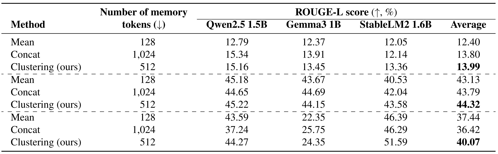
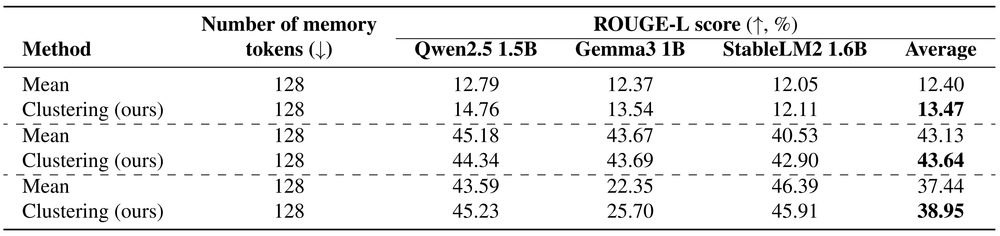

Problem Setting
Large language models (LLMs) often rely on user-specific
memories distilled from past interactions to enable personalized generation.
A common practice is to concatenate these
memories with the input prompt, but this approach quickly
exhausts the limited context available in on-device LLMs.
Compressing memories by averaging can mitigate context
growth, yet it frequently harms performance due to semantic
conflicts across heterogeneous memories. We
focus on significantly improving context efficiency, while maintaining personalization quality.
Our Solution: Clustering-driven Memory Compression
Our clustering-driven memory compression method consists of the following steps (illustrated in Figure 1):
- Given \(N\) supporting documents, we first compress each into a set of memory tokens.
- The memories are grouped into \(K\) clusters based on similarity.
- Within each cluster, the memories are merged (e.g. by averaging).
- The resulting cluster-level memory representations are concatenated.
- The final compressed memories are appended to the new input example, enabling the LLM to generate personalized outputs under a limited context budget.
Results
We evaluate on personalized news headline generation, tweet paraphrasing and movie tagging tasks from the LaMP benchmark, across three on-device models.
We compare our clustering approach with the mean and concatenation baselines in Table 1. The results indicate that overall
our solution leads to the best performance on all considered tasks, while requiring significantly fewer memory tokens than concatenation.

Table 1: Main results across various models and datasets. Personalized news headline generation at the top, followed by personalized tweet paraphrasing and personalized movie tagging.
To further analyse the benefits of our solution, we compare the performance of our solution with the mean baseline under the same total number of memory tokens. The results in Table 2 confirm the usefulness of our solution.

Table 2: Matching total number of memory tokens — results across various models and datasets. Personalized news headline generation at the top, followed by personalized tweet paraphrasing and personalized movie tagging.
Summary
We have introduced an efficient method to personalize on-device LLMs via clustering-driven memory compression. The
method leads to improved performance compared to both concatenation and computing the mean of memories, while using
fewer memory tokens than concatenation.
|